Polar Arduino Plotter
This is the project documentation for a polar plotter based on the Arduino platform. See it in action on YouTube.
For comments or questions, please use this blog post.
See also my Live Plotter project.
The project
A polar plotter is a plotter with a rotating, extendable arm. Its characteristics differ greatly from those of a traditional plotter, which in most areas have a superior design. You could say the polar plotter is more portable or something, but mainly I made this one because it was more of a challenge.
Here's how it looks:
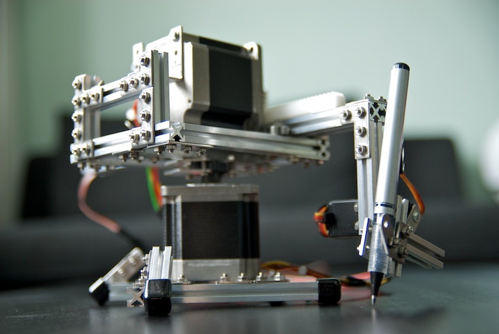
Here's a video showing off its plotting capabilities.
The code
The code of this project is divided into two parts. One is the Arduino project that controls the plotter. The other is a java project used for generating font-data in a format readable by the Arduino program.
The Arduino project plotter_polar can be opened directly in the Arduino IDE.
The java project font-path-generator is a Maven project. To compile and run, do
$ cd font-path-generator
$ mvn install
$ java -jar target/font-path-generator-1.0-SNAPSHOT.jarThe program produces output of font data that can be copy/pasted into the Arduino program. See the javadoc for FontPathGenerator for more info.
You can also import and run the project in Eclipse.
The gear
The brain of the plotter is an Arduino UNO Rev3.
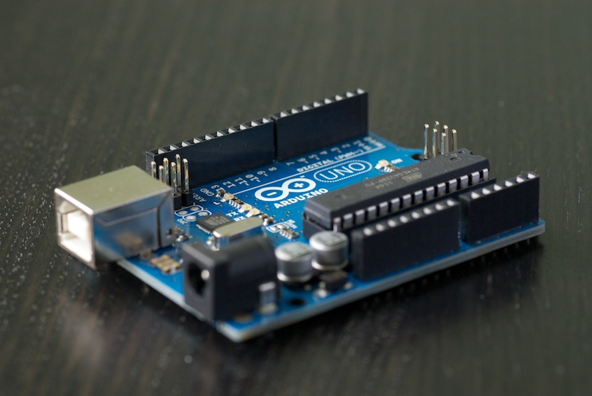
The muscles come from two heavyweight stepper motors from All Electronics.
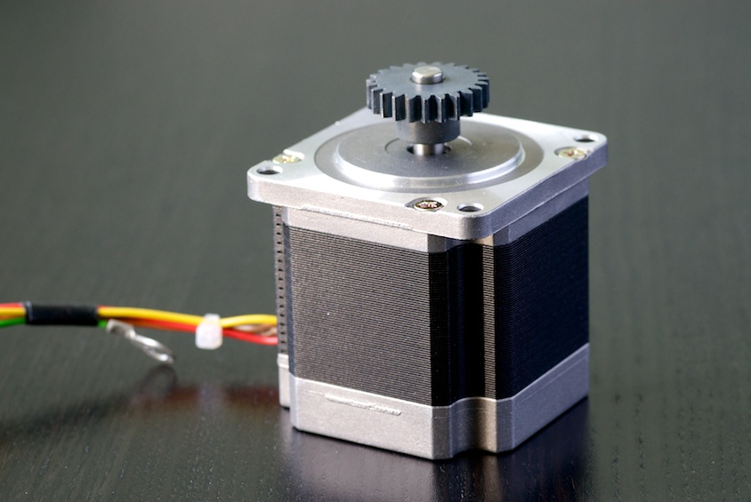
These are quite quite heavy and powerful and come with a firmly mounted gear head. That's great when driving a gear rack
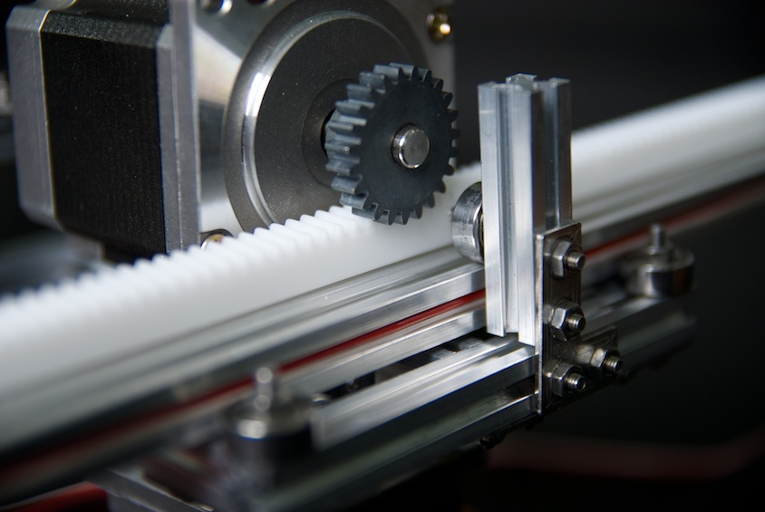
But not as great when you need to mount stuff to it. Here's how I did:
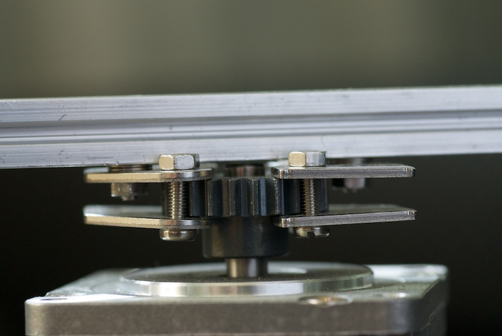
The motors require quite a lot of power. This is provided by two Big Easy Drivers.
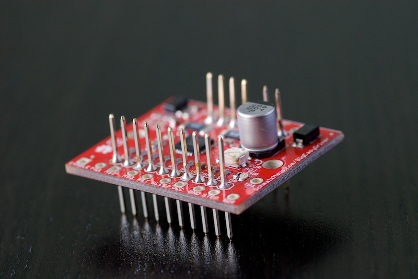
The normal Easy Driver does not do the job for these motors. I tried.
The motors themselves have a resolution of 200 steps per revolution and the Big Easy Drivers provide 16 substeps per step, giving a total of 3200 steps per revolution. (That's pretty good resolution.)
The backbone of the plotter uses the awesome Maker Beams.

I have used the starter kit, extra kits of 40mm and 60mm beams, two packs of bearings and the vinyl end caps.
The construction has two adjustable feet to level the plotter so that the plotter head keeps on the same height from the paper at all lengths and directions.
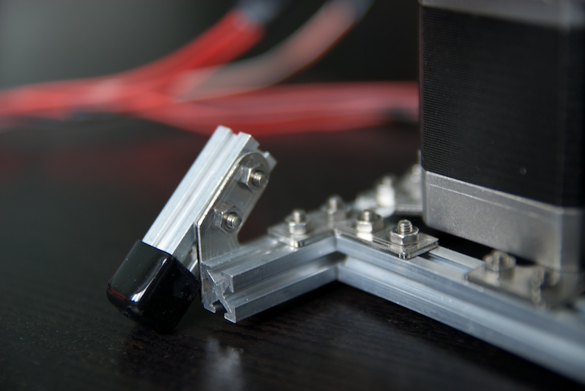
The plotter arm (made up of two connected 300mm beams for stability) is guided by 9 bearings.
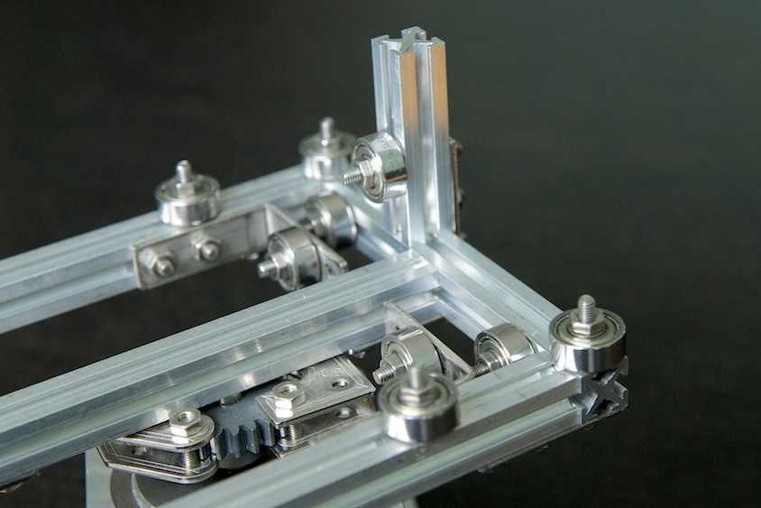
The pen is controlled by a RobotBase servo.
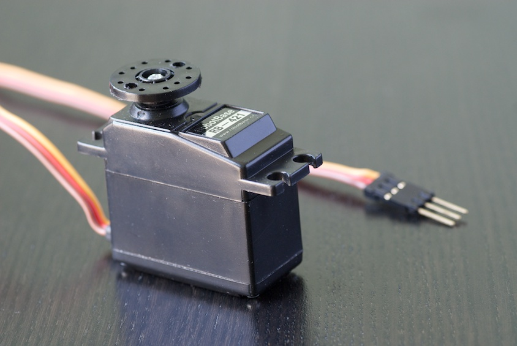
The servo head has a MakerBeam construction attached to it which holds the pen. The angles of this setup allows for almost vertical movement of the pen tip even though the movement is really rotating. The screws that hold the pen are easily loosened to provide simple pen switching.
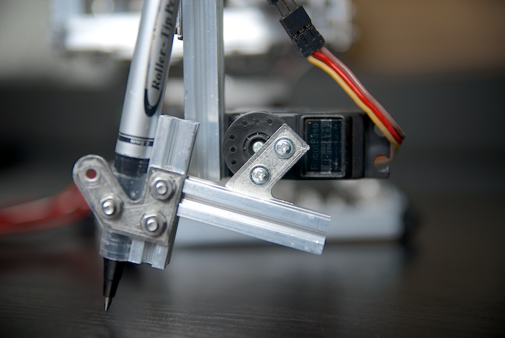
The servo cable fits nicely in the space of the MakerBeam arm.
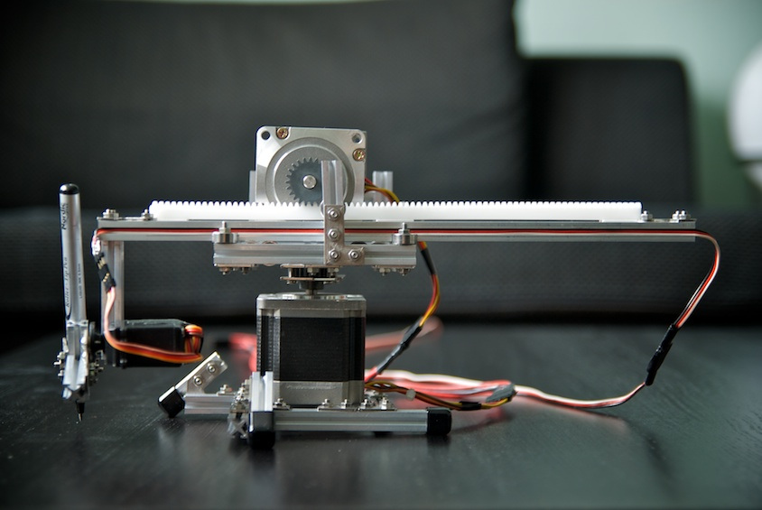
This Rotary Encoder allows for fine-tuning pen position in draw/hover mode. The encoder is endless and has steps when rotating it and can also be pushed down like a button. When not pushed down, rotation adjusts the up-mode of the pen with one degree. Pushed down, it adjusts the pen-down mode. Each step on the encoder maps to one degree on the servo.
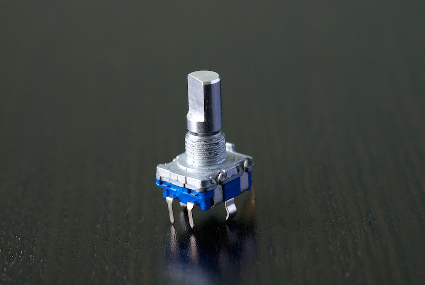
This is the home grown control board for manual control of the arm. The two rightmost buttons control arm extension. The two in the middle control rotation. The leftmost triggers the plot program to run. All buttons are connected to ground. Inputs are pulled HIGH per default. See http://arduino.cc/en/Tutorial/DigitalPins for details on setting a stable default state on inputs.
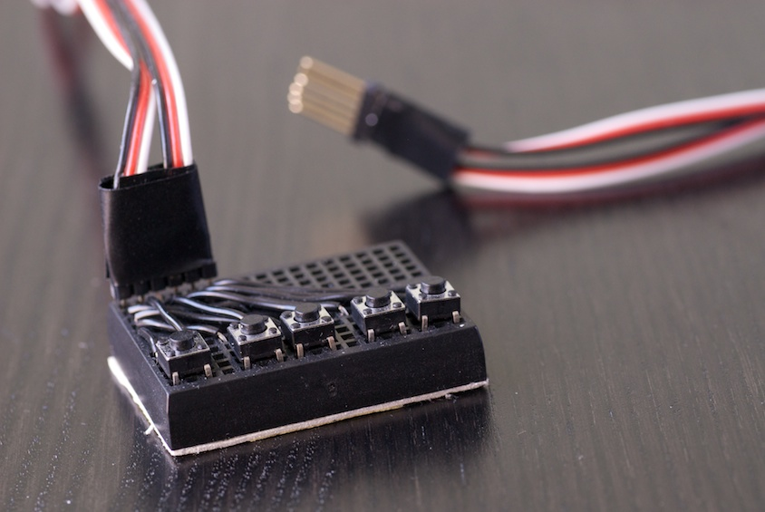
The Vinyl Gear rack comes from Conrad. It is attached to the arm using double sided mounting tape.
Wiring
I haven't crated any schematics for the project. The wiring is quite simple though, and is pretty much all about knowing how to hook up your motors, which you'll need to know how to do anyway. Below is an overview image.
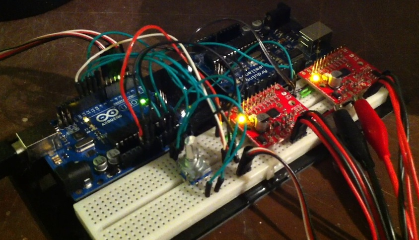
Drawing
On a traditional plotter, drawing lines and rectangles is simple. You can run the plotter in one direction for a while and then run it in another direction. On a polar plotter, drawing rectangles is trickier. And some lines are easy to draw and some not.
This line is easy to draw (you just run the radial (top) motor and let the angular (bottom) one stand still):
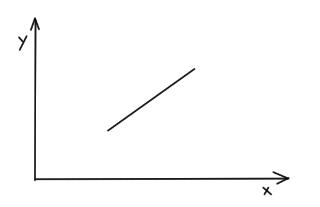
Whereas this one is quite tricky:
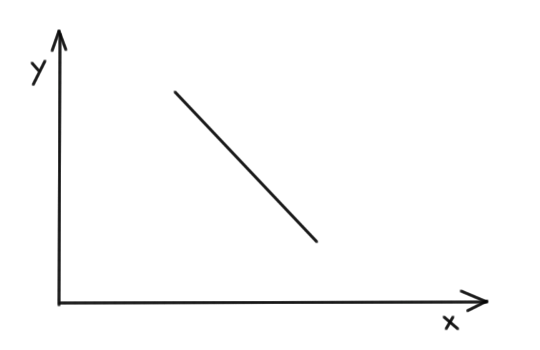
For that one, while running the angular motor, the radius must first be decreased and then increased again.
The only two shapes that are possible to draw when running one motor at a time is a radial line or a circle segment. To be able to draw any shape, we need to divide them into small bits of these supported operations.
To start with, all shapes are converted to a number of short lines. These lines are then split into 1/8mm steps for each move. Then, for each step we translate this movent to its corresponding changes in the polar coordinate system, angle and radius. This is finally translated to the number of steps to run each motor.
The Arduino program implements sort of the Bresenham's line drawing algorithm. In the implementation, each line segment is split into 1/8mm in the least steep direction. These small steps ensure smooth lines but also introduce significant rounding errors in each step. Therefore, as Bresenham declares, we must keep track of the rounding error we make and apply in the next calculation.
Supported drawing methods
The Arduino program supports a number of drawing methods. All choords are given in millimeters.
moveTo(float x, float y)lineTo(float x, float y)drawRect(float x, float y, float width, float height)drawCircle(float x, float y, float radius)drawString(String str, float x, float y)
Note that there is no optimization done to shorten the travel distances for the pen. Commercial plotters are quite efficient. This plotter for example starts drawing rectangles from the bottom left corner regardless of where the pen is when it is about to start.
Drawing text
I had kind of a hard time producing a useful font definition that could be used in Arduino. You cannot really bundle and read a TrueType font. Other stuff I looked at were SHX type (single line) fonts, but I never got that to work. What I wanted was a simple line representation o a simple font, but I didn't want to hand-write coordinates or anything like that.
I resorted to generating font definitions in java. In java, you can read a font, convert it to a shape and then get a path iterator for that shape. Each segment in the path iterator has a type and coords. The number of coords depends on the type. For e.g. LINE_TO, the coords make up one point and the operation means draw a line to this point from where we are. The types are defined in http://docs.oracle.com/javase/1.4.2/docs/api/java/awt/geom/PathIterator.html.
When getting a path iterator from a shape, you can say that it may contain Bezier curves or only lines. Getting only lines would have been awesome as this was already supported by the program, but that prove to be far more verbose than what would fit in the Arduino program. So I had to implement Bezier support. See the code for implementation details and Bezier curve for background.
The font generator iterates over the segments and produces an int array representation that is printed to std out. This chunk can then be pasted into the Arduino program.
The following is the definition of the uppercase I:
/* I */ int char_41[] PROGMEM = { 115, 15, 0, 37, 0, 1, 37, 289, 1, 78, 289, 1, 78, 0, 4};The first int 115 defines the width of the glyph. The second 15 means there are a total of 15 ints in this array. The third int 0 means SEG_MOVETO and 37, 0 is the point to move to. The following 1 means SEG_LINETO 37, 289 and so forth. The finishing 4 means SEG_CLOSE which means draw a line back to the latest SEG_MOVETO point.
The Arduino program has support for font size and line height. You set it globally before drawing text.
Note that when generating the font data, you can use any TrueType font which is awesome(!). Note though that complex fonts take lots of points and curves to describe to you may not fit the whole ASCII charset on the Arduino board.
An implementation detail is that Arduino program uses PROGMEM to store the font data and reads the definition of each char into memory before drawing it.
Precision
The plotter has quite good precision, at least when drawing close to origin. Both motors have 3200 steps per revolution. This translates to 0.022mm radial movement per step and 2 * pi * 270mm / 3200steps = 0.53mm per step angular movement for a fully erected arm.
Note that, as can be seen in the video, the accuracy is pretty good also over time. I thought initially that rounding errors would cause it to drift, but apparently they do not.
Speed
The speed of the motors is controlled by a set delay in the stepping.
The motors can go really fast. However, the time for calculations is significant. We do lots of math in each little step. This could probably be optimized, but currently it actually has impact.
There is also the fact that drawing gets ugly in the corners of figures if we go too fast in the turns. The motors are powerful and the arm is quite light, but still if we go too fast in a corner there will be some jittering. We could probably go fast when drawing straight lines and slow down in the corners, but that's not implemented. Note though that the arm goes faster when the pen is up and we're not drawing.
Note also that the speed has more impact on drawing quality when the arm is fully erected.
Other characteristics
The plotter has no sensors and has no idea of the position of the arm when the program is started. This means that we need to define an origin and put the arm in that position manually before starting to draw. If the arm starts in a position other than what we've programmed it to, the drawing will be skewed.
The plotter also has no limits, meaning that if we draw too far away, the plotter will drop its arm. The same way, if we draw too close to origin, we'll probably bend the whole construction. The motors are quite powerful. Drawing outside the box should be done with a finger on the kill switch.
Improvements
There is plenty of room for improvements in both the hardware and software design. Here are some that I thought of:
- Variable speed - run faster where it does not affect drawing quality (e.g. straight lines).
- Spring suspended pen - to get a constant pen pressure and need less fine-tuning
- Calculations - could probably be more efficient
- The font definitions - having the array length in the array itself may not be the most efficient thing to do. But it saves some memory. If each int in the array could be a byte, that would be a great memory saver. We would have to transpose negative values though (font data below the baseline) and make sure we keep numbers within the byte boundary.
- The upper motor attachment is unneccessarily complex. It was supposed to provide a bit of suspension which was definitely not needed since the arm rolls easily on the bearings.